Vibe Coding 実践プロジェクト
この章では、完全にデモンストレーションしますVibe Codingの全プロセス——コードを黙々と書くのではなく、自然言語で要件を説明し、AI に実行させます。
最終目標は、コードを1行も書かずに、実際に使える Web アプリケーションを作ることです。
まず理解しよう：Vibe Coding とは何か
Vibe Coding という名前は、OpenAI の共同創業者 Andrej Karpathy のツイートに由来します。
彼が言いたかったのは：製品の「雰囲気」に浸り、コードの詳細を忘れて、自分が欲しいものを説明するだけで、AI が実現してくれる。
あなたの今のプログラミング方法とは何が違うのか
| 従来のプログラミング | Vibe Coding |
|---|---|
| 構文や API を覚え、ドキュメントを調べる | 自然言語で意図を説明し、AI がコードを生成する |
| 1行ずつ手書きして、自分でデバッグする | 複数回の対話でイテレーション、AI が書き、AI が直す |
| まず全体を設計してから、1行ずつ書く | 話しながら作り、作りながら調整する |
| バグがあれば自分で検索し、自分で考える | エラーメッセージをそのままAIに渡して直してもらう |
| あなたの役割は実装者 | あなたの役割は設計者 |
Vibe Coding の核となる作業リズム
開発プロセス全体は、シンプルな3ステップのサイクルに従います：
| ステップ | あなたがやること | AI がやること |
|---|---|---|
| 1. Plan | 要件と目標を説明する | 要件を分析し、技術案を提示する |
| 2. Execute | 案を確認し、制約を与える | コードを生成し、ファイルを修正する |
| 3. Verify | 実行して検証し、結果を確認する | エラーを修正し、出力を調整する |
各ステップが完了するたびに検証し、合格したら次のサイクルに進みます。
これが Vibe Coding の核心の秘訣です——すべての要件を一度にAIに放り込むのではなく、小さな一歩ずつ進め、各ステップで方向が正しいことを確認します。
環境準備
必要なものは3つだけです。しかもすべて無料です。
1. VS Code エディター
ダウンロードURL：https://code.visualstudio.com
VS Code チュートリアル：https://www.runoob.com/vscode/vscode-tutorial.htmlVS Code は Windows / macOS / Linux に対応しており、完全無料です。
2. GitHub Copilot（VS Code に内蔵済み、インストール不要）
VS Code の最新版には GitHub Copilot がすでに内蔵されており、拡張機能をインストールする必要はありません。。
やることは1つだけです：
- VS Code を開き、右上隅のアカウントアイコン
- を選択してSign in with GitHub、あなたの GitHub アカウントでログインします
- ログイン後、Copilot が自動的に有効になります。
GitHub アカウントがない場合は、先にgithub.com無料で1つ登録してください。
エディターを開くと Copilot の入り口が表示されます。GitHub アカウントでログインするだけでOKで、拡張機能マーケットでプラグインをインストールする必要はありません。
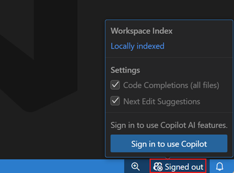
ログイン後に確認：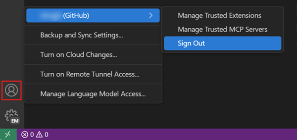
右上隅の小さなアイコンをクリックすると、Copilot のチャットウィンドウを呼び出せます：

3. Node.js
ダウンロードURL：https://nodejs.org
Node.js チュートリアル：https://www.runoob.com/nodejs/nodejs-tutorial.html
LTS バージョンを選択し、インストール後にターミナルを開いて確認します：
node -v # 应显示 v20.x.x 或更高 npm -v # 应显示 10.x.x 或更高
いくつかのショートカットキーを覚えよう
この2つのショートカットキーが最もよく使うものです：
| ショートカットキー | 機能 | いつ使うか |
|---|---|---|
| Ctrl+I（Mac: Cmd+I） | インライン Chat | コードを選択して、AI に説明または修正させる |
| Ctrl+Shift+I（Mac: Cmd+Shift+I） | Chat パネル | 新機能開発に関する長めの対話 |
| Tab | 補完を受け入れる | AI がグレーの提案を表示したら、Tab で受け入れる |
| Esc | 補完を拒否する | AI の提案が間違っている場合、Esc で無視する |
プロジェクト立ち上げ：何を作るのか
これから Vibe Coding の手法で完全なタスク管理アプリケーションを構築します。。
機能一覧
- タスクの作成、編集、削除
- タスクには3つの状態があります：未着手、進行中、完了
- 優先度は3段階：高（赤）、中（黄）、低（緑）
- カンバンビュー：3列でドラッグ＆ドロップによりタスクの状態を変更
- ダークモード：ワンクリックで切り替え
- データはブラウザに自動保存（リロードしても消えない）
- スマートフォンでも使える（レスポンシブレイアウト）
技術選定
| 何を作るか | 何を使うか | なぜ選んだか |
|---|---|---|
| フロントエンドフレームワーク | Vue 3 | 習得が簡単、コミュニティが活発、中国語の資料が多い |
| ビルドツール | Vite | 起動が速く、Vue 公式推奨 |
| スタイル | Tailwind CSS | CSS ファイルを書く必要がなく、HTML 内で直接スタイルクラスを書ける |
| データ保存 | localStorage | ブラウザ標準搭載で、バックエンドサーバー不要 |
| プロジェクト名 | vibe-coding-runoob | 私たちの実践プロジェクト名 |
第1ラウンドの対話：骨組みを作る
それでは本格的な Vibe Coding を始めましょう。すべての要件を一度にAIに伝えるのではなく、一歩ずつ進めます。
Step 1：プロジェクトを作成
ターミナルを開いて、プロジェクトを作成：
npm create vite@latest vibe-coding-runoob -- --template vue
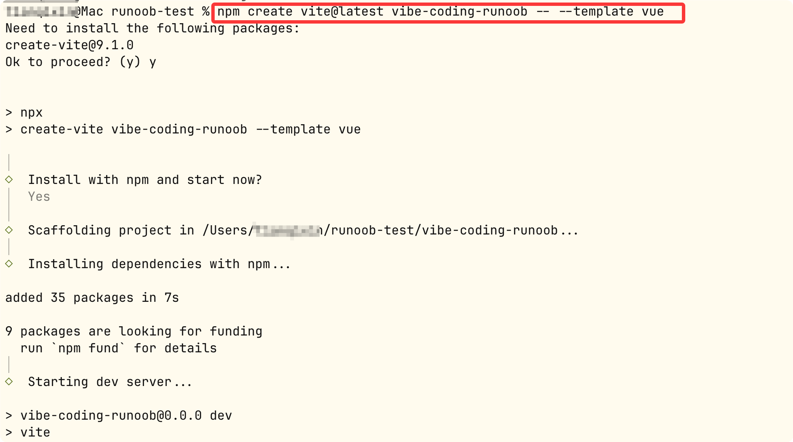
新しいターミナルを開き、そのプロジェクトに入ります。次に tailwindcss に従い、code .コマンドを使用してプロジェクトを VS Code で開きます：
cd vibe-coding-runoob npm install npm install -D tailwindcss @tailwindcss/vite code .
これで VS Code にプロジェクトが開かれました。Ctrl+Shift+I（Mac: Cmd+Shift+I）を押すと Copilot Chat パネルが開きます。右上隅にもパネル切り替えボタンがあります：
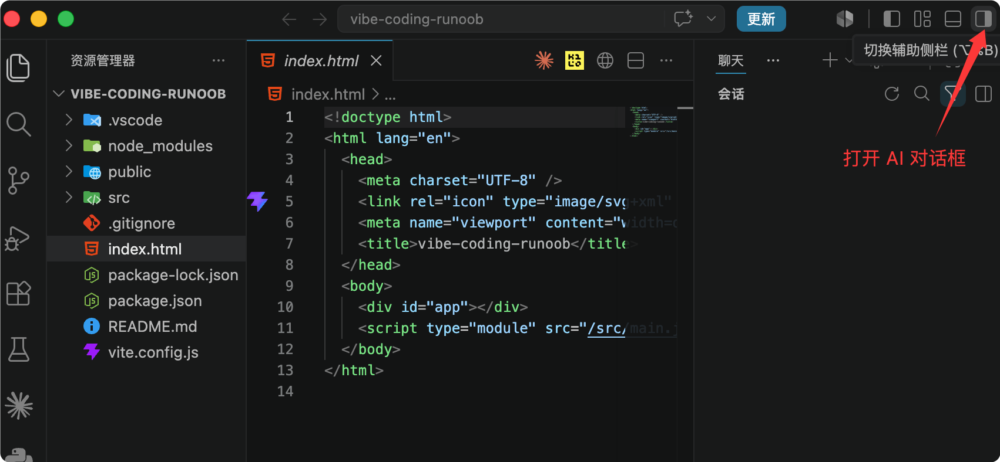
Step 2：最初の対話
Chat パネルに次の文章を入力します。つまり、欲しいものを自然言語で伝えるだけです：
我在开发一个任务管理 Web App，项目名 vibe-coding-runoob。 技术栈：Vue 3 + Vite + Tailwind CSS。 请帮我搭建项目骨架，创建以下文件： 1. src/types/task.ts — 定义 Task 类型 字段：id, title, description, status, priority, dueDate, createdAt status 可选值：'todo' | 'in-progress' | 'done' priority 可选值：'low' | 'medium' | 'high' 2. src/App.vue — 应用主页面 - 顶部导航栏（标题"Vibe Coding Runoob"） - 中间显示任务列表区域 要求： - 使用 Vue 3 script setup 语法 - 使用 Tailwind CSS 做样式 - 界面简洁干净，主色调用 indigo（靛蓝色） - 现在先用假数据展示，后面再接真实功能
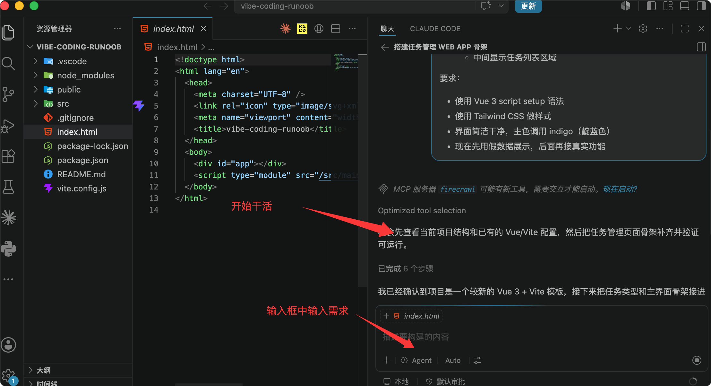
AI はコードを少しずつ出力してファイルのコードを修正します。あなたは「保持」をクリックして、自動的にファイルへ書き込ませます。
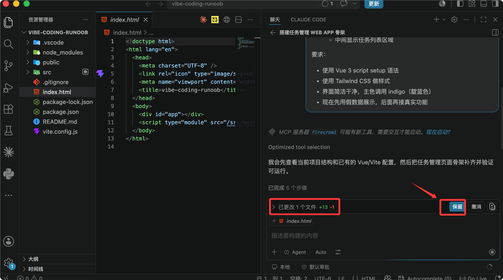
コマンド実行の許可を求められたら、「許可」をクリックするだけでOKです：
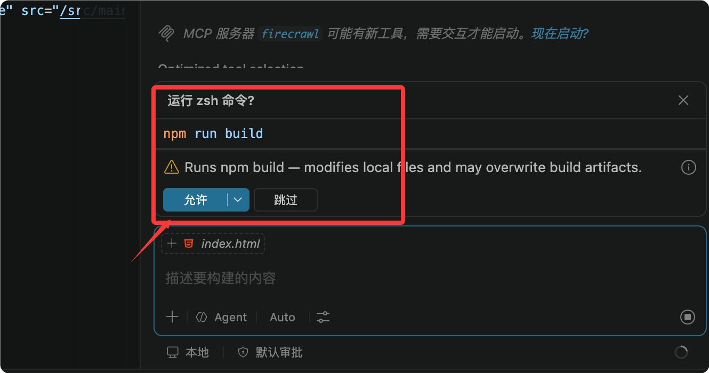
Step 3：検証
AI がコードを書き終えると、ターミナルで実行できると案内されます：
npm run dev
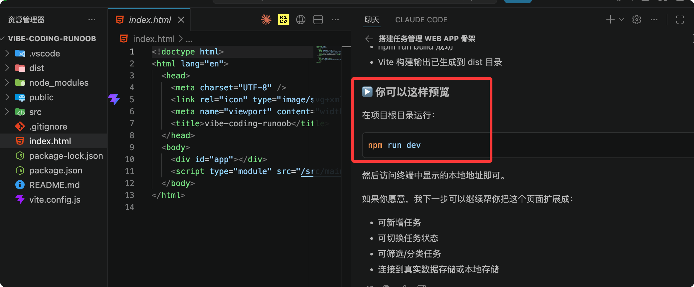
右上隅の「ターミナルを開く」ボタンをクリックし、ターミナルでコマンドを実行します：
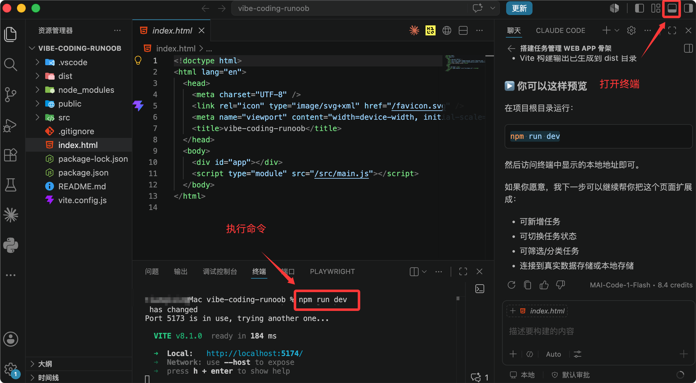
ブラウザで http://localhost:5173 を開き、ページが表示されたら最初のステップは成功です。
完成イメージは以下のとおりです：
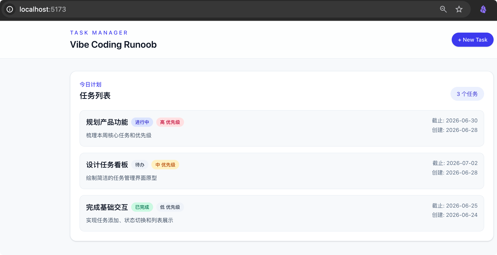
これが Plan → Execute → Verify の第1ラウンドです。あなたが目標を説明し、AI が実行し、あなたが結果を検証しました。以降の各ラウンドもこのリズムで進めます。
わからないコードに出会ったら？
Vibe Coding ではすべてのコードを理解する必要はありません。ただし、完全に理解できないコードがあれば、それを選択して、押してCtrl+I、入力：
用通俗的中文解释这段代码在做什么
AI はあなたが理解できる言葉でそれを説明してくれます。
第2ラウンドの対話：タスクリストとフォームを実装
骨組みが動作するようになりました。次は実際の機能を実装しましょう。
Step 1：タスクカードコンポーネント
引き続き Chat パネルに入力：
创建 src/components/TaskCard.vue 组件： 功能： - 展示单个任务的信息：标题、描述、优先级标签、截止日期 - 优先级用颜色区分：high 红色、medium 黄色、low 绿色（左边框即可） - 点击左侧复选框标记任务为完成（标题加删除线） - 右上角有删除按钮（× 图标） - 鼠标悬停时卡片微微放大（hover:scale-[1.02]） Props 接收：task（Task 类型） Emit 事件：toggle（切换完成状态）、delete（删除任务）
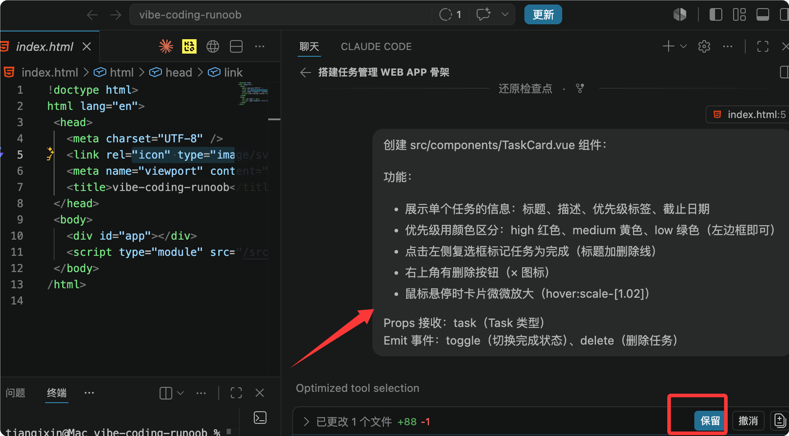
AI 生成後、ファイル書き込みポイントは保持、コマンド実行ポイントは許可、最終結果：
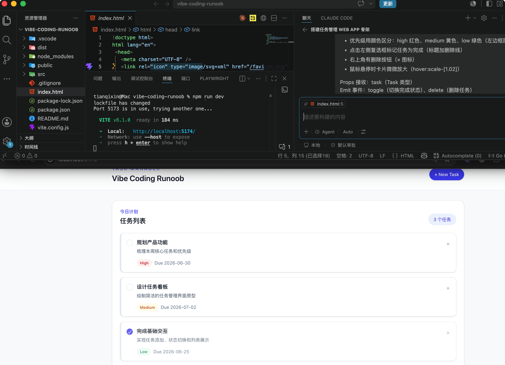
次にタスクリストのコンテナを作成：
创建 src/components/TaskList.vue 组件： 功能： - 接收任务列表，用 TaskCard 展示每一项 - 任务按创建时间倒序排列（最新的在上面） - 顶部有状态筛选按钮：全部 / 待办 / 进行中 / 完成 - 没有任务时显示空状态提示："还没有任务，点击下方按钮创建第一个吧"
Step 2：タスク作成フォーム
创建 src/components/TaskModal.vue 组件： 功能： - 点击"+ 新建任务"按钮打开弹窗 - 表单字段：标题（必填）、描述（选填）、优先级（下拉选择） - 标题为空时显示红色错误提示"标题不能为空" - 点击弹窗外的灰色遮罩关闭弹窗 - 按 ESC 键关闭弹窗 - 提交后用 emit 把新任务传给父组件 使用 v-model 绑定表单数据 使用 Teleport 把弹窗渲染到 body 下
Step 3：コンポーネントを組み合わせる
ここで App.vue を更新し、TaskList と TaskModal を組み合わせます：
更新 src/App.vue： - 引入 TaskList 和 TaskModal 组件 - 使用 reactive 管理 tasks 数组（先用示例数据） - 实现 addTask 函数：接收 TaskModal 提交的数据，添加到 tasks 数组 - 实现 toggleTask 和 deleteTask 函数 - TaskModal 的显示/隐藏用 ref(false) 控制 示例数据包含 2 条任务，让页面看起来不空
Step 4：検証
ブラウザで手動で一通り操作します：新規タスク作成 → チェックボックスをクリックして完了をマーク → タスク削除。すべての機能が正常に動作したら、次のラウンドに進みます。
第3ラウンドの対話：データの永続化
今のままではページをリフレッシュするとタスクが消えてしまいます。データをブラウザの localStorage に保存する必要があります。
AIに要件を伝える
现在任务数据只存在内存里，刷新就没了。请把数据持久化到 localStorage： 1. 创建 src/utils/storage.ts： - saveTasks(tasks): 把任务数组存为 JSON - loadTasks(): 读取并解析 JSON，读取出错时返回空数组 - 存储键名：vibe-coding-runoob-tasks 2. 更新 src/stores/taskStore.ts： - 用 Vue reactive 管理状态 - 初始化时从 localStorage 加载数据 - 使用 watch 自动监听变化并保存（deep: true） - 导出 addTask、updateTask、deleteTask 函数 - 首次使用时如果没有数据，自动创建 3 条示例任务 3. 更新 App.vue，改为从 taskStore 获取数据和方法
検証
# 在浏览器中： 1. 添加几条任务 2. 刷新页面 → 任务还在！ 3. 按 F12 打开开发者工具 → Application → Local Storage 4. 找到 vibe-coding-runoob-tasks，查看存储的 JSON 数据
データが消えた場合は、F12 コンソールのエラーメッセージを AI に貼り付けて修正させます。
第4ラウンドの対話：カンバンビュー
要件の説明
我想添加一个看板视图（Kanban），文件：src/components/KanbanBoard.vue 功能： - 三列：待办 | 进行中 | 已完成 - 任务卡片显示在对应状态的列中 - 卡片可以拖拽到其他列（用 HTML5 原生拖拽 API） - 拖入新列时自动更新任务的 status - 在 App.vue 顶部加两个 Tab 按钮："列表"和"看板" - 切换时保持数据一致 注意：不需要引入任何拖拽库，用原生的 dragstart、dragover、drop 事件即可。
AI 生成後に検証：カードを1枚「未着手」から「進行中」にドラッグし、タスクのステータスが更新されたことを確認します。
第5ラウンドの対話：ダークモードとモバイル対応
ダークモード
添加深色模式：创建 src/components/ThemeToggle.vue 功能： - 点击按钮切换亮色/深色模式 - 在 html 标签上添加/移除 dark class - 用 localStorage 记住用户选择（键名：vibe-coding-runoob-theme） - 首次访问时跟随系统设置（prefers-color-scheme） - 按钮放在导航栏右侧 同时给所有组件添加 dark: 前缀的深色样式。
モバイル対応
适配手机屏幕（375px 宽）： - 看板三列在手机上改成竖向单列布局 - 任务模态框在手机上改成从底部滑出的样式 - 所有按钮的点击区域不小于 44px - 表单输入框字号不小于 16px（防止 iOS 自动缩放） - 导航栏在手机上用汉堡菜单 使用 Tailwind 的响应式类：sm: md: lg:
検証：ブラウザで F12 を押し、モバイルモード（375px）に切り替えて、各ページを一つずつ確認します。
バグに遭遇したら：万能デバッグテンプレート
これは Vibe Coding の「応急処置キット」です——どんなエラーでも、このテンプレートを直接使ってください：
我遇到了一个问题，帮我修复： 【错误信息】 把终端或浏览器控制台的完整错误粘贴在这里 【我想实现的效果】 描述你期望发生什么 【我已经尝试过的方法】 列出你试过但没解决的操作
AI はエラーメッセージに基づいて自動的に問題を特定し、修正案を提示します。自分で原因を分析する必要はありません。
AIにコードをレビューしてもらう
大きな機能を完了するたびに、Chat に入力：
请审查我当前项目的代码，重点检查： 1. 有没有安全风险 2. 有没有性能问题 3. 错误处理是否完整 4. 有没有可以简化的地方
AI は項目ごとに問題点と修正の提案をくれます。これは経験豊富な開発者にしかできないことですが——AI があれば、あなたにもできます。
デプロイして本番公開
プロジェクトが完成したら、最後のステップはそれを公開し、誰でもアクセスできるようにすることです。
GitHub にプッシュ
$ git init $ git add . $ git commit -m "feat: vibe-coding-runoob 任务管理应用" # 在 github.com 创建同名仓库后： $ git remote add origin https://github.com/你的用户名/vibe-coding-runoob.git $ git push -u origin main
Vercel にデプロイ
- アクセスvercel.com、GitHub アカウントでログイン
- Add New Project をクリックし、vibe-coding-runoob リポジトリを選択
- Framework は Vite を選択し、そのまま Deploy をクリック
- 1〜2分待つと、xxxx.vercel.app ドメインを取得できます
リンクを友達に送れば、友達はあなたのアプリを使えます。
Vibe Coding まとめ
良いプロンプトを書く公式
良いプロンプト =目的 + 制約 + コンテキスト
| おすすめしない | おすすめ |
|---|---|
| タスクリストを作って | TaskList.vue コンポーネントを作成してください。機能：タスクリストを表示し、タイトル、ステータス、優先度ラベルを含む。Tailwind CSS を使用し、データは props で渡す。サードパーティの UI ライブラリは導入しないこと。 |
イテレーションのリズム
每次对话 → 只做一个功能 每次修改 → 立刻在浏览器里验证 每个功能完成 → 立刻 git commit 每天结束 → push 到 GitHub
多くの変更をため込んでからまとめてテストするのはやめましょう。自分でトラブルを招くことになります。
これらはAIに任せてはいけない
- コードをまったく見ずに受け入れる——少なくともどのファイルを変更したかは把握する
- AI が「このコードにはセキュリティリスクがある」と言ったら、真剣に受け止める
- 公開前にすべての機能を手動テストしないこと
クリックしてノートを共有
<p style="font-size:14px;">ノートはこの記事の内容の拡張である必要があります！</p><br> <p style="font-size:12px;"><a href="../tougao.html" target="_blank">記事投稿は、ここをクリック</a></p> <p style="font-size:14px;"><a href="../w3cnote/runoob-user-test-intro.html" target="_blank">招待コードの取得方法</a></p> <h3 class="text-muted"><i class="fa fa-info-circle" aria-hidden="true"></i> ノートを共有する前に<a href=";.html" class="runoob-pop">ログイン</a>が必要です！</h3> <p><a href="../w3cnote/runoob-user-test-intro.html" target="_blank">招待コードの取得方法</a></p>